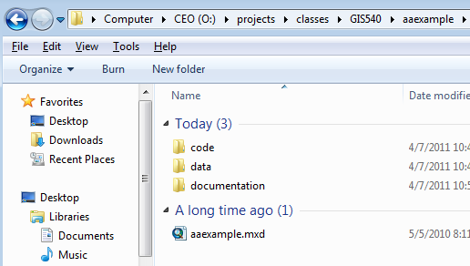
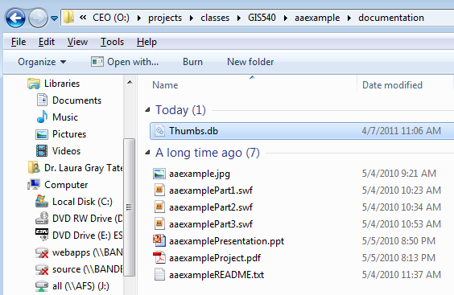
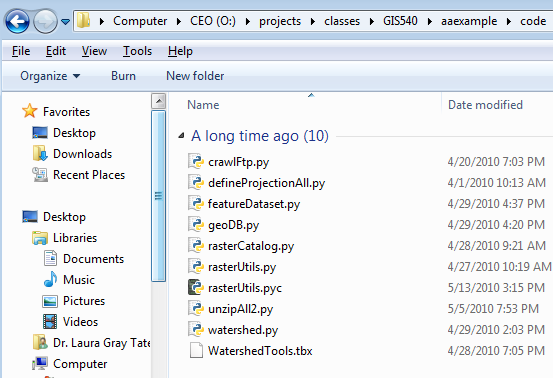
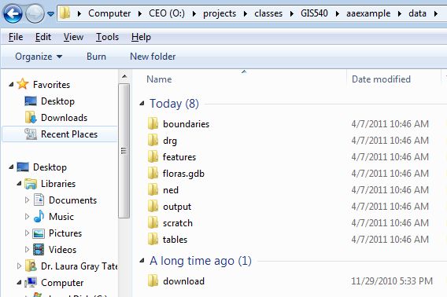

GIS 540
Your files must be organized into data, documentation, and code subdirectories with just the map or main script on he top level. Be sure to test your code to make sure it works in this configuration.
The documentation subdirectory should contain the text report, the videos (distance ed. only), Powerpoint (if applicable) thumbnail image.

The code subdirectory should contain scripts, toolboxes, executables, etc.

The data directory should contain a small sample data file which can be used to demonstrate the application, workspaces, databases, and so forth. These can be organized however it makes sense to organize them for your project. In this image, she has data arranged in subfolders, but if you just have a few input/output files, you may just want to put these on the top level of the data directory.
